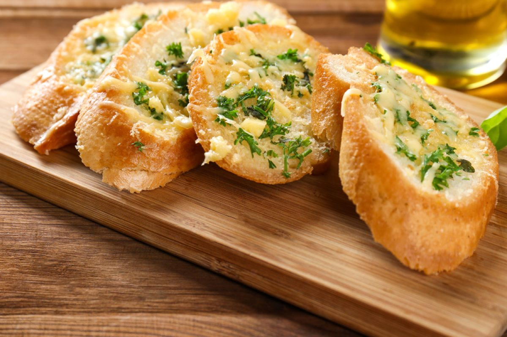

Garlic Bread

Description
This garlic bread recipe is foolproof for just about any occasion, especially summer cookouts,
gatherings with friends, or family dinners. It is prepared in a short time and can solve an
appetizer or snack at any time, and it is also a versatile recipe that we can adapt to our tastes.
To make it a success, try to choose a good bread, baguette style or rustic loaf with little crumb and not
too thick, and a good butter. The amount of garlic is up to your taste, although I think 3 medium-sized
cloves for a large stick are perfect. This is a basic recipe that we can enrich by adding Parmesan cheese
to the mixture with which to paint the bread. I assure you that without cheese it is an equally addictive
delight.
Ingredients
- 1 baguette or rustic loaf of firm crumb and good crust
- Unsalted butter
- 65 g warm
- 30 ml extra virgin olive oil
- 1g lemon zest
- 4g granulated garlic
- 3 clove of garlic
- Ground black pepper
- Parmesan cheese optional
- Coarse or flake salt
- Fresh parsley
Steps
- - Preheat the oven to 180ºC and prepare a tray by covering it with parchment paper. Make sure the
butter is at room temperature, with a soft texture. Wash and dry the lemon well. Peel the garlic
cloves and chop them very fine. Cut the loaf of bread into
slices about one finger thick
- - Arrange the softened butter in a bowl and add the olive oil, the lemon zest, the minced garlic cloves,
a dash of black pepper, the granulated garlic, a pinch of coarse salt and a tablespoon of Parmesan
cheese, if used. . Mix everything very well until leaving a creamy texture
- - Spread each slice of bread with the creamy paste using a kitchen brush, or a butter knife. Arrange
them on the prepared tray and bake for about 12-15 minutes, until the butter has melted and the
bread is nicely browned. Chop parsley and add it before serving.